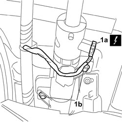
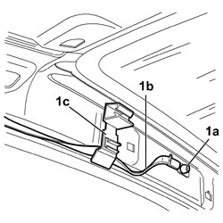
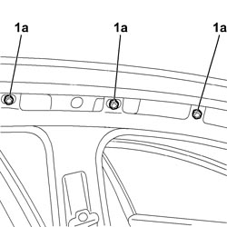
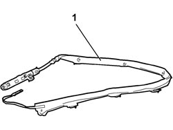

5580C52 WINDOW BAG MODULE (ONE) LH OR RH - R.R WITH INTERFERING PARTS REMOVED
- Path
- Procedures > 55 ELECTRICAL EQUIPMENT > 5580 SPECIAL ACCESSORIES > 5580C AIR BAG SYSTEM > 5580C52 WINDOW BAG MODULE (ONE) LH OR RH - R.R WITH INTERFERING PARTS REMOVED
- Kind
- repair procedure (removal / refitting; the operation number is the code)
- Applies to
- all engines; all production periods
- Interactive page
- https://sloeber94.github.io/elrnDB-fCrm/en/#/194000811
Applies to: all engines; all production periods
- Turn the ignition key to the OFF position and extract it.
- Disconnect the negative and positive battery terminals and insulate them.
- Wait for 10 minutes before continuing.
Description | Connector | |
|---|---|---|
BATTERY |
Applies to: all engines; all production periods
 Removing
Removing
 Refitting
Refitting1. Working in the rear of the vehicle, disconnect electrical connection (1a) and unscrew the window bag module gas generator bolts (1b).
Description | Connector | |
|---|---|---|
1a | DRIVER SIDE WINDOW BAG |
Description | Connector | |
|---|---|---|
1a | DRIVER SIDE WINDOW BAG |

Applies to: all engines; all production periods
1. Working in the front of the vehicle, unscrew bolt (1a) and release the window bag module link (1b) from retainer (1c).

Applies to: all engines; all production periods
1. Undo the six bolts (1a) retaining Window Bag module (1b).

Applies to: all engines; all production periods
1. Remove the window bag module from the vehicle.

Applies to: all engines; all production periods
Refitting
RemovingObserve the following precautions:
- Position the window bag module in its seat, tighten the six bolts along the upper perimeter of the side panel and tighten to the specified torque.
Component | Fastening | dia | Value (daNm) | Validity |
|---|---|---|---|---|
HEAD BAG TO BODYSHELL | Bolt | M6 | 0,8 ÷ 1,2 |
- Working in the front of the vehicle, secure the window bag module link in the retainer and tighten the bolt.
Component | Fastening | dia | Value (daNm) | Validity |
|---|---|---|---|---|
HEAD BAG RETAINING BAND TO BODYSHELL | Bolt | M6 | 0,64 ÷ 0,96 |
- Working at the rear of the vehicle, position the window bag module gas generator, screw in the bolts and tighten to the specified torque.
Component | Fastening | dia | Value (daNm) | Validity |
|---|---|---|---|---|
HEAD BAG GAS GENERATOR TO BODYSHELL | Bolt | M6 | 0,8 ÷ 1,2 |
- Connect the electrical connection.
Description | Connector | |
|---|---|---|
DRIVER SIDE WINDOW BAG |
Description | Connector | |
|---|---|---|
PASSENGER SIDE WINDOW BAG |
- Connect the battery terminals.
Description | Connector | |
|---|---|---|
BATTERY |